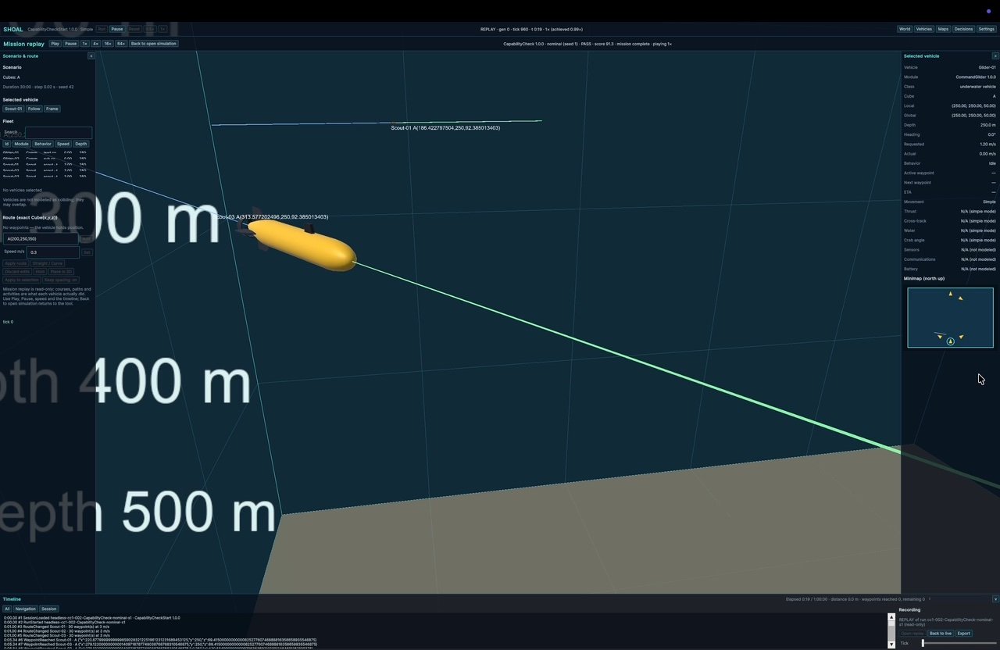
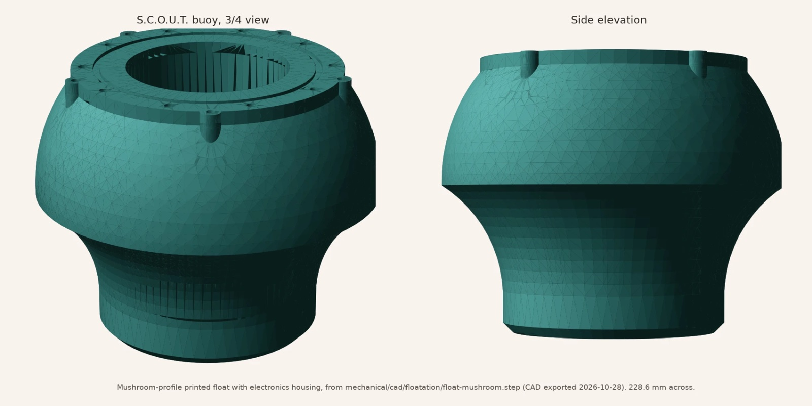
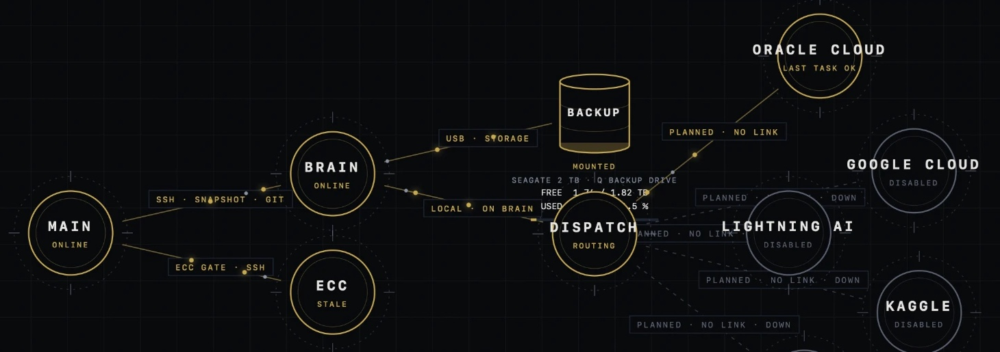
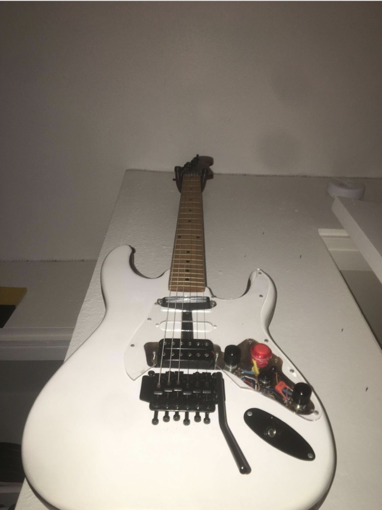
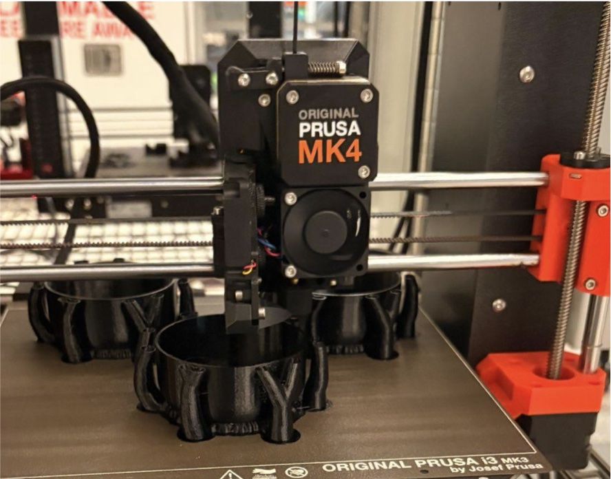

Santa Clara University · B.S. Engineering · June 2027
John Ryan Myrdal
I design, build, and test hardware: a marine sensing buoy, a custom electric guitar, 3D-printed planters, and the tools I write to design and test them.
Featured project
SHOAL: autonomous underwater vehicle and swarm simulator

A physics-aware 3D simulator I designed, specified, and built with AI coding agents (Claude and Codex) in Unity and C#, to test whether a swarm protocol I wrote can run and be scored in simulation. Vehicles and map cubes are modular, runs are recorded and replayable, and a five-vehicle mission is scored against a written swarm protocol.
Projects

S.C.O.U.T. reef buoy
Low-cost modular marine sensing buoy. Float design, stability solver, FEA, and test engineering.
SHOAL simulator
Physics-aware 3D swarm simulator in Unity and C#, with recording, replay, and scored missions.

Q Ecosystem
A local-first compute lab linking a laptop, an older Mac, a university account, and free cloud tiers.

Custom electric guitar
Kit rebuilt with a phase and coil-split wiring harness, routed cavities, and a custom finish.

Self-watering planter
PETG herb planter designed in Onshape; roots draw from a reservoir below each pot.
Q Sentinel
Local network monitoring and anomaly detection.
Q Concierge
A pixel-art personality that serves as the front end of the ecosystem.
Q Senate
Model-agnostic decision council with critique and deterministic voting.
Turbidity sensor and float
Sensor and electronics housings through multiple DFM revisions. Write-up coming.
Printer carriage and rails
Carriage, roller, and bearing-block assemblies with tolerance iterations. Write-up coming.
Robotic arm
Sensor integration, servo control, and linkage optimization. Write-up coming.
Software projects belong to the Q ecosystem, my local compute and software lab. Status labels are as of late October 2026.
About
Engineering student at Santa Clara University who builds things end to end: CAD and FEA, design for manufacture, 3D printing and fabrication, electronics, assembly, and testing. My senior design project is a low-cost reef-monitoring buoy, and outside class I build instruments, planters, and a self-hosted computing and AI research environment.
- 3.83 GPA, SCU
- Tau Beta Pi honor society
- 1st place Engineering Robotics Contest, 2023
Education
Santa Clara University — B.S. Engineering
GPA 3.83/4.0. Minor: Technical Innovation, Design Thinking & Entrepreneurial Mindset. Dean’s Merit Scholarship, AFCEA Hawaii Scholarship.
Le Jardin Academy — International Baccalaureate Diploma
GPA 4.84/5.0. Excellence awards in Mathematics, Physics, and History.
Skills
- Design
- Fusion 360, Onshape, SolidWorks, FEA, sheet metal, DFM/DFA/DFAM, tolerance analysis
- Prototyping
- FDM additive manufacturing, hybrid manufacturing, post-processing, CNC and sheet-metal design, assembly
- Computation
- Python, C, modeling and simulation, data analysis, system integration, self-hosted computing, local LLM workflows, Excel
Contact
Open to engineering roles beginning after June 2027 graduation, and to conversations about hard hardware problems.